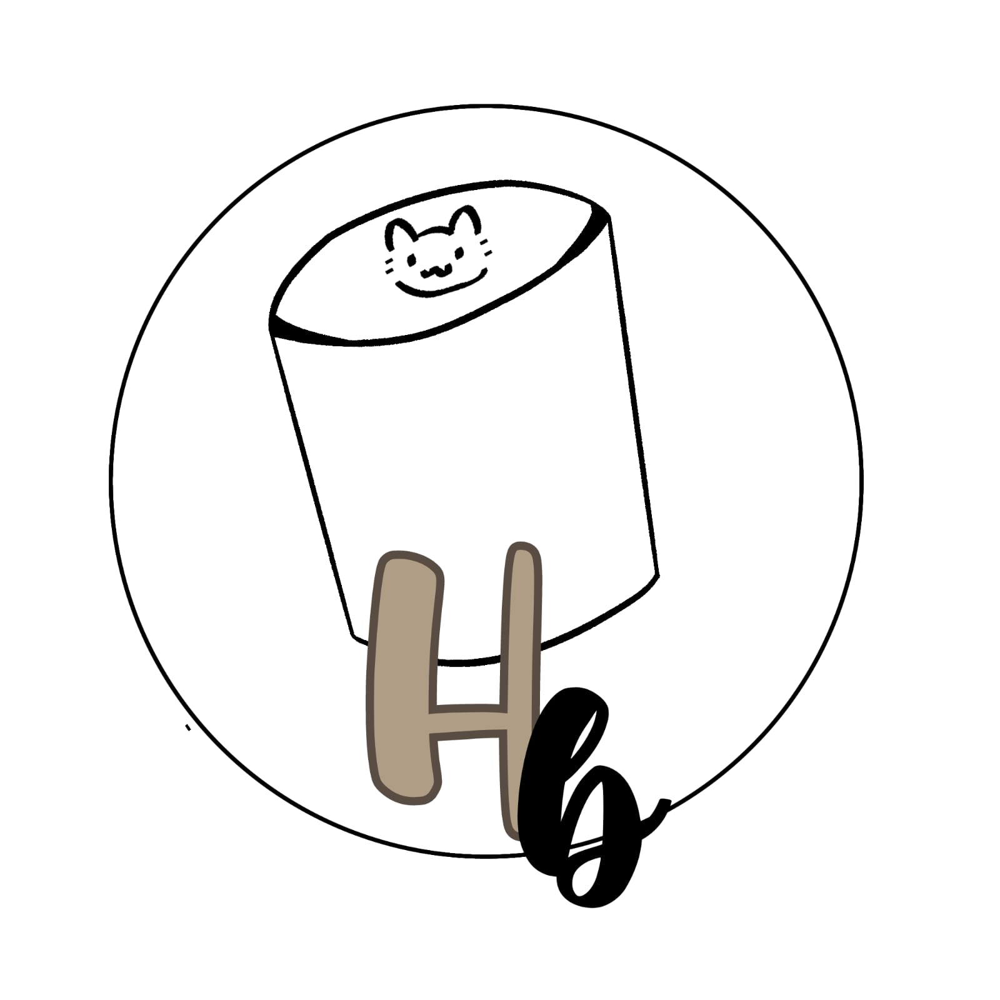

A caféteria habber's café foi e nalgurada nos anos 90, por zacarias que em frentava uma sintuação finaceira complicada por que estava com dividas. mas surgiu uma ideia brilhante de criar uma cafeteria
a cafeteria foi algo rustico e inovador
A caféteria habber's café foi e nalgurada nos anos 90, por zacarias que em frentava uma sintuação finaceira complicada por que estava com dividas. mas surgiu uma ideia brilhante de criar uma cafeteria
a cafeteria foi algo rustico e inovador

agradar o consumidor ser uma empresa confiavel, vender produtos panifacação, café e confeteria que sejão fresco e que tragão mometos de aconchego e memórias afetivas.
Se torna reflexo no mercado é ser uma empresa focada na experiecia do consumidor, tendo sempre mais opções no cardapio que agrade o cliente.